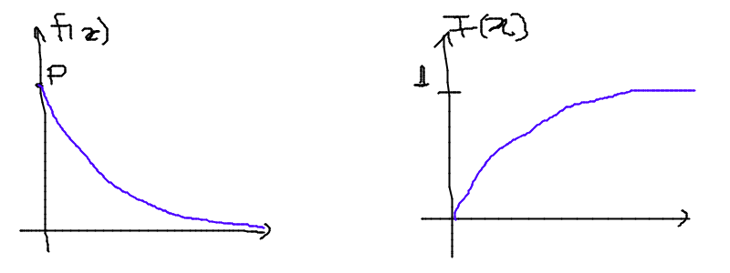

Notas em estatística
Índice
- Lista de tópicos de referência
- Definições básicas
- Medidas de tendência central
- Medidas de posição
- Intervalos de confiança
- Probabilidades
- Variáveis aleatórias discretas
- Variáveis aleatórias contínuas
- Processo estocástico ou de Poisson
- Transformações e simulações
- Variáveis multidimensionais
- Introdução à Inferência Estatística
- Estimação
- Testes de Hipóteses
- Referências
Lista de tópicos de referência
- Delineamento experimental;
- População e amostra;
- Tabulação e apresentação de dados;
- Medidas de tendências centrais;
- Medidas de dispersão;
- Teste de hipótese;
- Regressão linear;
- Análise de variância;
- Correlação;
- Probabilidade.
Definições básicas
Estatística é a disciplina que estuda a manipulação, análise, interpretação e apresentação de dados.
Estatística descritiva: extrai grandezas de um conjunto de variáveis.
Estatística inferencial: infere grandezas para um todo (população) a partir da análise de uma parte (amostra).
O valor da uma variável de um elemento da amostra ou população é chamado de observação. Um conjunto de observações é chamado de conjunto de dados (data set).
Uma variável pode ser qualitativa ou quantitativa. As qualitativas podem ser nominais (p.e., homem ou mulher) ou ordinais (p.e., 1o., 2o., etc.). As quantitativas podem ser discretas (p.e., números inteiros) ou contínuas (números reais).
Classe é um agrupamento dos valores de uma variável. Um intervalo (de valores) é um exemplo máximo de uma classe.
Densidade de um agrupamento é definido por Δy ⁄ ni da classe, com y sendo o valor da variável e n o número de elementos das classe.
Uma distribuição de freqüência é um método de se agrupar dados em classes de modo a fornecer a quantidade (e/ou a percentagem) de dados em cada classe.
Uma distribuição cumulativa de freqüências (DCF) dá o número total de valores que caem abaixo do limite de certa classe numa distribuição de frequências. Também escrito como F(x) = P(x’ < x) = n(x) ⁄ N, onde n(x) é o número de observações menores ou iguais a x. Propriedade: P(xo ≤ x < x1) ≡ F(x1) − F(x0). Seja f(x) a função densidade de probabilidade:
Uma distribuição cumulativa de freqüências pode ser representada graficamente por uma ogiva. Para construí-la representa-se os limites superiores das classes na abscissa e faz-se a altura dos pontos proporcionais à freqüência acumulada até esses limites.
Resíduo (r): valor do dado (d) menos o valor do modelo (m).
r = d - m
Representações
Gráfico de dispersão unidimensional: Reta (horizontal) com indicação dos valores. Valores repetidos acumulam-se na vertical.
Gráfico de ramo-e-folha: Gráfico onde, por exemplo, o valor da dezena define a classe e cada unidade dentro daquela dezena é indicada na classe.
Histograma: Também conhecido como distribuição de frequências ou diagrama das frequências, é a representação gráfica, em colunas (retângulos), de um conjunto de dados previamente tabulado e dividido em classes uniformes. A base de cada retângulo representa uma classe e a altura de cada retângulo representa a quantidade ou frequência com que o valor dessa classe ocorreu no conjunto de dados.
A amplitude de classe Δ do histograma de modo a minimizar a maior distância entre o histograma e a densidade é:
Onde σ é um estimador do desvio padrão populacional. O número de classes nc do histograma será:
Medidas de tendência central
Valor médio ou medidas de tendência central: média, mediana e moda (população ou amostra).
A variância e o desvio padrão de um conjunto de dados mede a dispersão dos dados em torno de um valor médio. A variância de uma amostra de tamanho n é representada por S2 e é dada por:
A variância da população de tamanho N é representada por σ2 e é dada por:
O desvio padrão é S para a amostra e σ para a população. O desvio médio dm é definido como:
A mediana md = x(n + 1) ⁄ 2 se n ímpar ou md = 0.5xn ⁄ 2 + 0.5x(n + 1) ⁄ 2 se n par.
Medidas de tendência central para dados agrupados
A média de dados agrupados é:
onde x representa a marca da classe (e.g., o centro do intervalo), f representa a frequência na classe, e n = ∑f.
A variância para dados agrupados é:
Interpretações do desvio padrão
Teorema de Chebyshev: O teorema de Chebyshev fornece uma interpretação útil para o desvio padrão. O teorema de Chebyshev enuncia que a fração de dados de qualquer conjunto situada dentro de k desvios-padrões da média é pelo menos, 1-1/k2, onde k é um número maior do que 1. O teorema se aplicada tanto para amostras quanto populações.
Por exemplo, se k = 2, o teorema atesta que pelo menos 75% dos dados estarão entre − 2S and + 2S. De maneira análoga, para k = 3, o teorema atesta que pelo menos 89% dos dados estarão entre − 3S e + 3S.
Lei empírica ou Teorema Central do Limite (regra 68–95–99,7): A lei empírica atesta que para um conjunto de dados tendo uma distribuição em forma de sino, aproximadamente 68% dos dados estarão à um desvio padrão da média, 95% estarão à dois desvios padrões e aproximadamente 99.7% estarão a três desvios padrões da média. A lei empírica aplica-se a (grandes) amostras ou populações.
Coeficiente de variação: O coeficiente de cariação CV é igual a os desvio padrão dividido pela média. O resultado é geralmente multiplicado por 100 para expressar a porcentagem. É portanto:
Outras definições
O coeficiente de variação ẽ uma medida de variação relativa, enquanto que o desvio padrão é uma medida absoluta da variação.
Índice z: O índice z é o número de desvios padrões que uma dada observação x estã abaixo ou acima da média. Para uma amostra, o índice é:
Média aparada: média aparada a p% é a média calculada retirando-se os p% dos dados inferiores e superiores.
Desvio mediano absoluto: calcula-se a mediana dos dados, depois todos os desvios absolutos da mediana e então o desvio (absoluto) mediano.
Medidas de posição
As medidas de posição são usadas para descrever a localização de uma observação particular em relação ao resto do conjunto dos dados (ordenados). Divisões comuns são os percentis, decis e quartis. Os percentis são valores que dividem os dados ordenados em 100 partes iguais. O p-nésimo percentil do conjunto é o valor no qual pelo menos p porcento das observações estão contidas naquele, ou num menor valor.
Por exemplo, o número de observações em um conjunto menores do que 5.5 são 11. Onze dividido pelo total (45) é 0.244 e 0.244 multiplicado por 100 é 24.4%. Este porcento aredonda-se para 24. A quantidade 5.5. é o 24o. percentil e é expresso como P24 = 5.5.
A associação entre percentis, decis e quartis é tal que vale a igualdade (que é a definição de mediana):
O intervalor interquantil, designado por dq ou IQR (em inglês) é definido como:
O intervalo interquantil mostra a dispersão da metade dos dados de valores intermediários, e não é afetadas por extremos no conjunto.
Quantis e simetria
Quantis são quantidades definidas como a mediana, mas com distintos valores de n.
O p-quantil é definido por:
Com fi = (p − pi) ⁄ (pi + 1 − pi). Ainda q(p) = x(1) se p < p(1) e q(p) = x(n) se p > p(n).
Instância interquantil dq = q3 − q1 = 1.349σ.
5 valores são importantes para avaliar a (as)simetria da distribuição de dados: x(1), q1, md, q3, x(n).
- md − x(1)≃x(n) − md
- md − q1≃q3 − md
- q1 − x(1)≃x(n) − q3
- md − q1 ou q3 − md≃0.5*(q3 − q1)
Uma quantidade usada como medida de simetria é A:
Gráfico caixa de bigodes ou box-and-whisker plot
Um gráfico caixa de bigodes, algumas vezes denominado por box plot, é uma representação gráfica na qual uma caixa que extende-se de Q1 a Q3 e contém uma linha intermediária que corresponde à mediana dos dados. Linhas (chamadas de bigodes ou whiskers) em raras vezes ligam o Q1 ao dado de menor valor (e Q3 ao de maior), mas geralmente marcam a região além do referido quartil Qi até a 1.5 vezes a distância interquartil a partir do mesmo (Li = Qi±1.5*dq).

Pontos além dos limites Li são chamados de exteriores. Se acreditamos que não devem pertencer a amostra, são chamados de outliers. O intervalo entre os limites superior e inferior LS − LI corresponde a 99,3% da distribuição normal.
Intervalos de confiança
O intervalo de confiança é tal que:
Se P(| − μ| < 1.96σ) = 0.95, onde é o valor médio da amostra, o intervalo de confiança será ] − 1.96σ, + 1.96σ[. Para n não muito grande, a distribuição normal não pode ser usada, e deverá ser substituída pela distribuição t de Student. Escrevendo a dependência explícita com n:
A amplitude do intervalo é 2z(γ)σ ⁄ √(n), independente de .
Probabilidades
A palavra probabilidade deriva do latim probare (provar ou testar). A ideia geral da probabilidade é frequentemente dividida em dois conceitos relacionados:
- Probabilidade de frequência, probabilidade aleatória ou visão objetivista, que representa uma série de eventos futuros cuja ocorrência é definida por alguns fenômenos físicos aleatórios.
- Probabilidade epistemológica, probabilidade Bayesiana ou visão subjetivista, que representa nossas incertezas sobre proposições quando não se tem conhecimento completo das circunstâncias causativas. Tais proposições podem ser sobre eventos passados ou futuros.
É uma questão controversa se a probabilidade aleatória é redutível à probabilidade epistemológica.
Probabilidade condicional e independência
Probabilidade condicional é chance de termos um evento A dado um fator B. Por exemplo, num dado curso tem-se 30 alunos, 20 dos quais mulheres. Qual a probabilidade P de que um aluno seja mulher?
P (mulher|curso) = 2/3
Propriedades:
Também conhecido por regra do produto de probabilidades. O último termo acima provém do Teorema de Bayes, comentado adiante.
Onde Ω é todo o espaço amostral.
Se P(A|B) = P(A), A é dito independente de B.
Dados os eventos A e H, diz (re)união (OR lógico) para A∪H e intersecção (AND lógico) para A∩H tal que:
Tem-se que P(A∩H) = 0 se A e H são eventos mutualmente exclusivos (p.e., homem ou mulher).
Teorema de Bayes
A probabilidade de ocorrência do evento Ci, supondo-se a ocorrência do evento A, é dada por:
O termo P(Ci) é chamado de probabilidade a priori. Os termos P(A|Ci), P(A|Cj) são chamados de verossimilhanças e P(Ci|A) é chamado de probabilidade a posteriori.
Cálculos de probabilidades a posteriori são chamados de inferências bayesianas. Antes de vermos um exemplo, definimos a probabilidade a posterior a partir de um e dois eventos B e B2. Vamos indicar por Ac o complementar de um evento qualquer A, e teremos então:
Exemplo: A previsão da bolsa é 10% de chance para queda no dia seguinte P(E) = 0.10. Uma nova informação B surge, de alta do dólar. A experiência passada diz que 20% das vezes a queda foi precedida no dia anterior por este tipo de notícia P(B|E) = 0.20 e 5% das vezes houve alta com a notícia P(B|Ec) = 0.05.
A previsão de queda para o dia seguinte inicialmente em 10% é então atualizada para 31%. Supondo uma nova informação relevante B2, como o Banco Central irá reduzir a taxa de juros, queremos saber qual será a previsão de queda com estas duas informações combinadas P(E|B, B2). O histórico é de que com alta do dólar (B) e redução da taxa de juros (B2) 10% das vezes houve queda na bolsa P(B2|E, B) = 0.10 e 60% houve aumento P(B2|Ec, B) = 0.60.
A previsão de queda para o dia em 31% é então atualizada para 7%.
Sumário das Probabilidades
| Event | Probability |
|---|---|
| A | P(A) ∈ [0, 1] |
| não A | P(Ac) = 1 − P(A) |
| A ou B | P(A∪B) = P(A) + P(B) − P(A∩B) P(A∪B) = P(A) + P(B) if A and B are mutually exclusive |
| A e B | P(A∩B) = P(A|B)P(B) = P(B|A)P(A) P(A∩B) = P(A)P(B) if A and B are independent |
| A dado B | P(A∣B) = (P(A∩B))/(P(B)) = (P(B|A)P(A))/(P(B)) |
Variáveis aleatórias discretas
Uma variável aleatória é variável cujo resultado (valor) depende de fatores aleatórios.
Matematicamente, variável aleatória é uma função que associa elementos do espaço amostral a valores numéricos, ou seja, X:Ω → ℝ. A representação padrão é variáveis aleatórias por letras maiúsculas e suas ocorrências por letras minúsculas.
"Variável aleatória é um tipo de variável que pode assumir diferentes valores numéricos, definidos para cada evento de um espaço amostral Ω".
Distribuição uniforme
p(X) = cte. A F(X) é uma reta, com valor 0 até x0 e 1 a partir de xf.
Distribuição de Bernoulli
É uma variável binária, com:
Distribuição binomial
n ensaios de Bernoulli geram k sucessos (e n-k fracassos). A probabilidade de tal sequência é pk(1 − p)n − k, e existem (nk) = (n!)/(k!(n − k)!) sequências, dados n e k.
A média é = np e σ2 = np(1 − p).
Distribuição hipergeométrica
Adequada quando consideramos extrações sem reposição. Exemplo: N objetos, r dos quais são A e N-r são B. n elementos são escolhidos (sem reposição). Qual a probabilidade pk que esse grupo n contenha k elementos de A?
Os pares (k, pk) constituem a distribuição hipergeométrica.
Distribuição de Poisson
Tomemos o caso binomial. Para n grande e p pequeno podemos aproximar o binômio por b(k;n, p) = (e − np(np)k)/(k!) = (e − λ(λ)k)/(k!).
Propriedade: = σ2 = λ.
Exemplo clássico de Poisson é o decaimento radiativo. Se p é uma taxa no tempo, λ = λ’t, onde t tem as unidades de p.
Exemplo
Considere um processo que têm uma taxa de 0.2 defeitos por unidade (de muitas). Qual a probabilidade de uma unidade qualquer apresentar:
- dois defeitos?
- um defeito?
- zero defeito?
Neste caso, temos que X ~ Poisson(λ) com λ = 0.2. Então:
- ℙ(X = 2) = (e − 0.2(0.2)2)/(2!) = 0.0164;
- ℙ(X = 1) = (e − 0.2(0.2)1)/(1!) = 0.1637;
- ℙ(X = 0) = (e − 0.2(0.2)0)/(0!) = 0.8187.
Sumário das distribuições
| Modelo | p(X=x) | Vars. | , σ2 |
|---|---|---|---|
| Bernoulli | px(1 − p)1 − x, x = 0, 1 | p | p, p(1 − p) |
| Binomial | (nx)px(1 − p)n − x, x = 0, …, n | n, p | np, np(1 − p) |
| Poisson | (e − λλx)/(x!), x = 0, 1, … | λ | λ, λ |
| Geométrica | p(1 − p)x − 1, x = 1, 2, … | p | (1)/(p), ((1 − p))/(p2) |
| Hipergeom. | ((rk)(N − rn − k))/((Nn)), a ≤ x ≤ b [1] | N, r, n | (nr)/(N), n⎛⎝(r)/(N)⎞⎠⎛⎝1 − (r)/(N)⎞⎠⎛⎝(N − n)/(N − 1)⎞⎠ |
| [1] | a = max(0, n − N + r), b = min(r, n). |
Variáveis aleatórias contínuas

Modelo normal

Lendo tabelas
As tabelas em geral dão P(0 ≤ X ≤ x’), ou seja, a integral de P entre 0 e x’.
Por exemplo, P(0 ≤ X ≤ 1.73) = (45818)/(100000) = 0.4582. Se 1.73 for o valor de σ, o valor acima deve ser multiplicado por 2.
Modelo exponencial
Exemplo, tempo de vida de um equipamento.
Distribuição Gama
Em matemática, a função gama é uma extensão da função factorial para o conjunto dos números reais e complexos. Essa distribuição tem como suas principais aplicações à análise de tempo de vida de produtos, além de ser matematicamente o caso geral de outras distribuições.
A função gama nos números reais:
Distribuição χ2
A distribuição χ2, chi-quadrado, ou Y é uma das distribuições mais utilizadas em estatística inferencial. Este teste de χ2 serve para avaliar quantitativamente a relação entre o resultado de um experimento e a distribuição esperada para o fenômeno. Isto é, ele nos diz com quanta certeza os valores observados podem ser aceitos como regidos pela teoria em questão. Muitos outros testes de hipótese usam, também, a distribuição χ2.
A função densidade de probabilidade da distribuição χ2:

Seja k o número de graus de liberdade. Para k > 30, podemos usar a aproximação normal a distruição χ2.
"O quadrado de uma variável aleatória com distribuição normal é uma variável aleatória com distribuição χ2(1)":
Lendo tabelas
A tabela é em apresentada como P(f(χ2k) > VALOR) = (ÍNDICE).
Por exemplo, para k = 2, P(f(χ2k) > 0.02) = 99.
Distribuição t-Student
A distribuição t de Student é importante para inferências sobre médias populacionais a partir de amostras (quando o desvio padrão é desconhecido), além de outras aplicações.
A forma da curva da distribuição é similar a normal, porém com asas maiores. Tente a curva normal para altos índices.
Se ν = 1, temos a distribuição de Cauchy.
Lendo tabelas
O valor V em geral dado é V( − tc ≤ t(ν) ≤ tc) = 1 − p, ou seja, é a integral dos extremos até o valor tc. É o contrário da área de σ, por exemplo.
Distribuição F [de (Fisher-)Snedecor]
Mede a razão entre duas χ2 independentes. É a "distribuição nula de uma estatística de teste, particularmente na análise da variância".

Distribuição lognormal
Sobre aplicações da distribuição, ver tópico Transformações e simulações.
Sumário das distribuições
| Modelo | f(x) | Parâmetros | , σ2 | F(x) |
|---|---|---|---|---|
| Uniforme | (1)/(β − alfa), α < x < β | α, β | (α + β)/(2), ((β − α)2)/(12) | (x − a + 1)/(b − a + 1) |
| Exponencial | 1 ⁄ βe − t ⁄ β, t > 0 | β | β, β2 | |
| Normal | (1)/(σ√(2π))e − ((x − μ)2)/(2σ2), − ∞ < x < ∞ | μ, σ | μ, σ2 | |
| Gama | β − α ⁄ Γ(α)xα − te + x ⁄ β, x > 0 | β > 0, α > 0 | αβ, αβ2 | |
| Qui-quadrado | (2 − ν ⁄ 2)/(Γ(ν ⁄ 2))yν ⁄ 2 − 1e − ν ⁄ 2, y > 0 | ν | ν, 2ν | |
| t-Student | (Γ((ν + 1) ⁄ 2))/(Γ(ν ⁄ 2)√(πν))⎛⎝1 + (t2)/(ν)⎞⎠ − (ν + 1) ⁄ 2, − ∞ < t < ∞ | ν | 0, (ν)/(ν − 2) | |
| F-Snedecor | (Γ⎛⎝((ν1 + ν2))/(2)⎞⎠)/(Γ⎛⎝(ν1)/(2)⎞⎠Γ⎛⎝(ν2)/(2)⎞⎠)⎛⎝(ν1)/(ν2)⎞⎠ν1 ⁄ 2(w(ν1 − 2) ⁄ 2)/((1 + ν1w ⁄ ν2)(ν1 + ν2) ⁄ 2), w > 0 | ν1, ν2 | (ν2)/(ν − 2), (2ν22(ν1 + ν2 − 2))/(ν1(ν2 − 2)2(ν2 − 4)) |
Processo estocástico ou de Poisson
Processo estocástico é uma coleção de variáveis aleatórias que, em geral, são utilizadas para estudar a evolução de fenômenos (ou sistemas) que são observados ao longo do tempo. Assim, ao invés de descrevermos o sistema através de equações determinísticas (como, equações diferenciais ordinárias), que dado uma condição inicial, conhecemos toda a evolução do sistema, vamos utilizar processos estocásticos, para o qual, dado uma condição inicial, ainda temos diversas trajetórias possíveis para a evolução do sistema.
A cadeia de markov é um processo estocástico caracterizado por seu estado futuro depender apenas do seu estado atual, sendo que os estados passados não influenciam no estado futuro. O nome cadeia de markov foi dado em homenagem ao matemático russo Andrey Markov.
Transformações e simulações
Vários procedimentos estatísticos são baseados na suposição de que os dados provêm de uma distribuição normal (ou em forma de sino, simétrica). Num caso assimétrico o que se propõem é efetuar uma transformação do valor das observações, de modo a se obter uma distribuição mais simétrica e próxima da normal. Uma família frequentemente utilizada é:
Simulando erros (padrões)
A ideia básica do bootstrap é reamostrar o conjunto disponível de dados para estimar o parâmetro μ, com o fim de criar dados replicados. A partir destas replicações, avalia-se a variabilidade de um estimador proposto para μ, sem recorrer a cálculos analíticos.
Variáveis multidimensionais
Distribuições marginais
Quando se tem duas variáveis aleatórias X e Y, pode-se criar uma tabela onde primeira e últimas colunas dão a distribuição de Y (y,p(y)) e a primeira e última linhas dão a distribuição de X (x,p(x)).
Para obter as probabilidades marginais, basta somar as linhas e colunas. Se for calculado em relação a uma linha ou coluna, isto é chamado de distribuição condicional.
Exemplo: seja f(x,y)=2x/y, 0<x<1, 1<y<e. As distribuições marginais são fx(x) = ∫e1(2x)/(y)dy = 2x e fy(y) = ∫10(2x)/(y)dx = (1)/(y).
Covariância
Com = ∬xyf(x, y)dxdy. O coeficiente de correlação é:
Correlação
Variáveis qualitativas
χ2 de Pearson = ∑((oi − ei)2)/(ei) = ∑Ri∑Si((nij − n*ij)2)/(nij)
Coeficiente de contingência C = √((χ2)/(χ2 + n)) apresenta intervalo variado.
O coeficiente T = √((χ2 ⁄ n)/((r − 1)(s − 1))) varia entre 0 e 1. r e s são o número de observações das respectivas variáveis
Uma variável qualitativa e uma quantitativa
Seja σ2 a variância padrão. x = (∑kiniσ2x)/(∑kini), segue que sempre x < σx (propriedade).
R2 = 1 − (x)/(σx); 0 ≤ R2 ≤ 1.
Se R2 = 0.415, diz-se que 41,5% da variação da variável quantitativa é explicada pela variável qualitativa.
Variáveis quantitativas
Sejam n pares de (xi, yi).
Com − 1 < corr(x, y) < 1 (propriedade).
Coeficiente de correlação CC = (cov)/(σxσy).
Correlação graficament

O coeficiente de correlação tradicionalmente definido (de Pearson) não define a forma desta correlação. Na figura a seguir 4 conjuntos de dados com a mesma correlação de 0.816 são apresentados.
Propagação de incertezas
Seja f = f(a, b). A incerteza de f será dada por:
Notar que as derivadas parciais que multiplicam a covariância não possuem módulo!
Gráfico q × q
Gráfico quantis-quantis é um gráfico dos dados ordenados em X contra os de Y. Mostra se os valores pequenos de X estão correlacionados com valores pequenos de Y.
Distribuições condicionais
A curva de regressão de Y sobre X:
Onde fY|X(y|x) = (f(x, y))/(fX(x)).
Distribuição normal bidimensional
Onde ρ é o coeficiente de correlação. Se ρ = 0:
Introdução à Inferência Estatística
Como selecionar uma amostra
Controlar possíveis viéses de selecão.
- Levantamentos amostrais: amostras de uma população bem definida.
- Levantamento probabilístico: mecanismos aleatórios de seleção dos elementos da amostra.
- Levantamento não-probabilístico: seleção com critérios dos elementos.
Planejamento de experimento: principal objetivo é o de analisar o efeito de uma variável sobre outra.
Levantamento observacional: dados são coletados sem que o pesquisador tenha contre sobre as informações obtidas.
W = X(n) − X(1): definição de amplitude amostral.
Se (X1, …, Xn) for uma amostra aleatória com média da população X, de média μ e σ2, então:
Onde − μ = (Zσ)/(√(n)) é o erro amostral da média. Da definição de Z, segue que probabilidade que o erro amostral da média para n = 1 esteja entre − σ e σ é 68.7%; para n = 2, que esteja entre − σ ⁄ √(2)eσ ⁄ √(2) é 68.7%; e assim sucessivamente.
Exemplo 1
ρ = 30 dos estudantes de uma escola são mulheres. Com uma AAS de n = 10, p̂ = proporção de mulheres da amostra. Qual a probabilidade de que p̂ difira de p em menos de 0.01%, ou P(|p̂ − p| < 0, 01)?
Como p̂ − p ~ N⎛⎝0, (p(1 − p))/(n)⎞⎠, σ2p̂ = (0.3 × 0.7)/(10) = 0.021.
(Usando tabela para 0.007 = 2790 × 2).
Exemplo 2
Uma variável aleatória populacional tem variância igual a 25. Se uma amostra aleatória simples de tamanho 100 for obtida, a probabilidade de que o valor da média amostral não difira do da média populacional por mais de 0,5 é, aproximadamente, igual a
A diferença está a 1σ (Z=1), que equivale a 68,3%.
Caso geral
Usar função t de Student.
Tipos de amostras
- AAS: amostragem aleatória simples, que pode ser com ou sem reposição.
- AAE: amostragem aleatória estratificada, i.e., população dividida em subpopulações (estratos), onde em geral é aplicado o AAS em cada estratos.
- AAC: amostragem aleatória por conglomerados. A amostra é subdividida em estratos, como no caso anterior mas com mais de um aglomerado por estrato. Depois, somente alguns aglomerados (em sua totalidade) são analisados.
- AADE: amostragem aleatória em dois estágios. Como no caso anterior, mas subamostras dos aglomerados são analisados.
- AS: amostragem sistemática. Observa-se indivíduos listados em k passos.
Amostras sem reposição de populações finitas
Sejam = μ e σx = (σ2)/(n)(N − n)/(N − 1). (N − n)/(N − 1) é o chamado fator de correção para populações finitas.
Distribuição de máximo de uma amostra
Qual a probabilidade de que um valor da amostra seja seu máximo m? R.: F(m). Aplicado em toda a amostra, temos [F(m)]n.
Onde F(m) é a função de densidade acumulada e f(m) função densidade da população.
Estimação
Num dado questionário, os 500 sócios de um clube responderam se aprovavam (SIM) ou não (NÃO) uma proposta. Sabemos que o resultado foi 300 votos favoráveis, ou 300/500=60%. Mas e se não dispuséssemos de toda a informação (500), mas sim só de uma amostra? Com qual certeza poderíamos inferir este percentual?
Num variável aleatória binária, p̂ = p e σ2p̂ = p(1 − p) ⁄ n.
A variância será a variância da variância, σ2σp̂ = (2σ4)/(n − 1).
No caso acima, a variância da variância permitiria estimar a variação com n da variância.
Estimador de mínimos quadrados
Encontrar α tal que σ seja mínimo.
Com a derivação em relação a α!
Estimador de máxima verossimilhança (likelihood, ou EMV)
Sejam n provas binárias com P(sucesso)=p, e X = número de sucessos. Devemos tomar como estimador o valor de p que torna a a mostra observada a mais provável de ocorrer.
n = 3, x = 2. L(p) Função de Verossimilhança.
L(α;x1, …, xn) = P(X1 = xi|α)…P(Xn = xn|α) é a Função de Verossimilhança.
Testes de Hipóteses
A construção de um teste de hipóteses para um parâmetro populacional: existe uma variável x associada a dada população e tem-se uma hipótese sobre determinado parâmetro μ dessa população (p.e., o valor verdadeiro de μ é μ0). Colhe-se uma amostra aleatória e deseja-se comprovar tal hipótese.
Erro tipo I: rejeitar H0 quando é verdadeira:
α = P(erro do tipo I) = P(rejeitar H0 é verdadeira) ≡ nível de significância.
Erro tipo II: não rejeitar H0 quando é falsa:
β = P(erro do tipo II) = P(não rejeitar H0 é falsa).
Exemplo 1
Um fábrica que usa parafusos diz que o modelo A tem resistência à tração de 145 kg, com desvio padrão de 12 kg. Já o modelo B tem média 155 kg, com desvio padrão 20 kg.
Um lote será leiloado, de onde pode-se analizar somente um pequena amostra. Como decidir se ele é do tipo A ou B?
Por exemplo, se ≤ 150 (o ponto médio entre 145 e 155), diremos que os parafusos são tipo A; caso contrário são do tipo B (isto é, > 150).
O resultado da amostragem de 25 parafusos foi = 148. É possível que os parafusos nesta amostra sejam B? Seguramente!
H0: os parafusos são de origem B. H1 significa que os parafusos são de origem A.
Erro do tipo I: Dizer que os parafusos são A, quando na verdade são B.
Erro do tipo II: Dizer que os parafusos não são A, quando na verdade o são!
De modo análogo, quando H1 for a alternativa verdadeira, teremos que a v.a. é tal que ~ N[145;5, 76]. Teremos, então,
Observando eses dois resultados, notamos que estaremos cometendo o erro de tipo I com maior probabilidade do que o erro de tipo II (no critério adotado).
Seja c o valor de critério para determinar se os parafusos são A ou B. Se c for escolhido menor que 150, notamos que α diminuirá e β aumentará. Logo, deve existir um ponto em que α seja igual a β, ou seja, uma regra de decisão em que a probabilidade de errar contra A seja a mesma que contra B. Mostre que esse ponto é c = 148.75, e nesse caso, α = β = 5.94.
Por exemplo, fixemos α em 5%, e vejamos qual a regra de decisão correspondente. Temos
que é igual a P(Z ≤ − 1.645). Da transformação para a normal padrão sabemos que
ou seja, c = 148.42. Então a regra de decisão será:
Se < 148.42, dizemos que o lote é A; caso contrário, é B.
Com essa regra, a probabilidade do erro de tipo II será ...
Exemplo 2
Uma máquina empacotadora de café tem média μ e variância 400 g2. A máquina foi regulada para μ = 500 g. Numa amostra com 16 pacotes para verificar a regulagem, a média foi de = 492 g. A máquina está ou não está regulada?
As hipóteses são H0:μ = 500 g, e H1:μ ≠ 500 g.
Para qualquer regulagem μ, a amostra de 16 pacotes deve seguir a distribuição N[μ, 400 ⁄ 16], o que dá σx = 5. Em particular, se H0 for verdadeira, ~ N[500, 25].
Vamos fixar α = 1. H0 deve ser rejeitada quando for muito grande ou muito pequena (diz-se que é um teste bilateral). A região crítica será a rabeira da gaussiana cuja área seja 0.5% (totalizando 1% nos dois lados). Assim temos que
Como não pertence à região crítica, nossa conclusão será não rejeitar H0. Ou seja, o desvio da média da amostra para a média proposta por H0 pode ser considerado como devido apenas ao sorteio aleatório dos pacotes.
A situação analisada não é muito realista: conhecer a variância da população. O caso mais geral, de média e variância desconhecidas, estão adiante.
Exemplo 3
Sabe-se que uma proporção populacional p de "sucessos" é igual a 0,2 ou a 0,5. Para testar H0:p = 0.2 versus H1:p = 0.5 serão realizadas cinco observações e será usado o critério que rejeita H0 se o número de sucessos observado for maior ou igual a 2. Mostre que a probabilidade de erro tipo II associada a esse critério é igual a 0.1875.
Exemplo 4
Um fabricante afirma que seus cigarros não contém mais que 30 mg de nicotina. Uma amostra de 25 cigarros fornece média de 31.5 mg e desvio padrão de 3 mg. No nível de 5%, os dados refutam ou não a afirmação do fabricante?
As hipóteses aqui são H0:μ = 30 e H1:μ > 30.
Supondo que X, a quantidade de nicotina por cigarro, tenha distribuição N[μ, σ2], a estatística terá distribuição t(24):
Por ser unilateral, devemos procurar o valor tc tal que seja 2 vezes o nível dado (5%), P(T > tc) = 0, 10. Da tabela obtemos tc = 1.711, ou seja, a região crítica para a estatística T é RC = [1.711; + ∞[.
O valor observado da estatística é:
Como t0 pertence à região crítica, rejeitamos H0, ou seja, há evidências de que os cigarros contenham mais de 30 g de nicotina.
Outra maneira de proceder é calcular o valor-p, ou seja,
Esse valor pequeno de α̂ leva a rejeição de H0. Para construir um IC(μ;0.95), verificamos na Tabela que o valor tγ = 2.064 e, portanto, IC(μ;0.95)=31.5 ± (2.064)3/√(25) , ou seja, IC(μ;0.95)=]30.26;32.74[.
Referências
What is the question?
Mistaking the type of question being considered is the most common error in data analysis